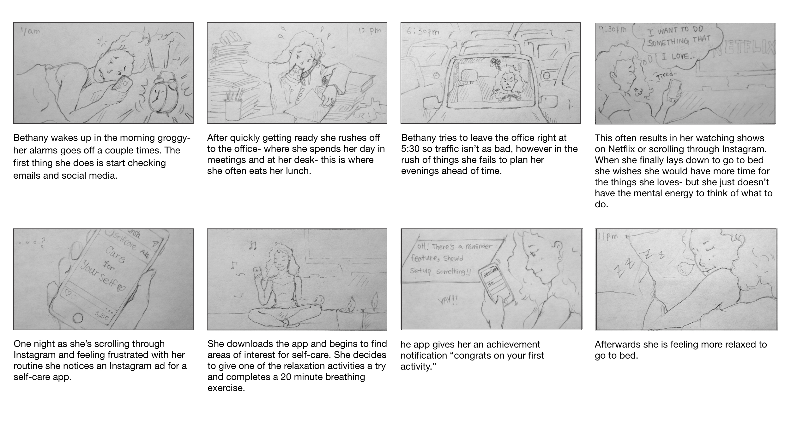
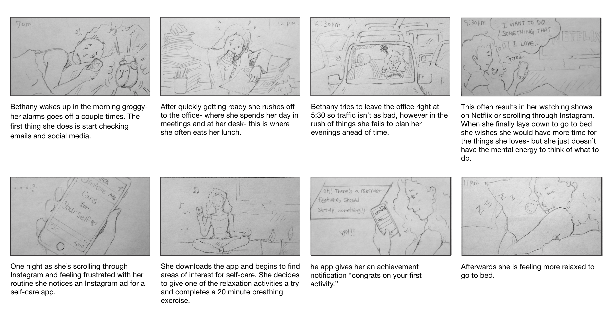
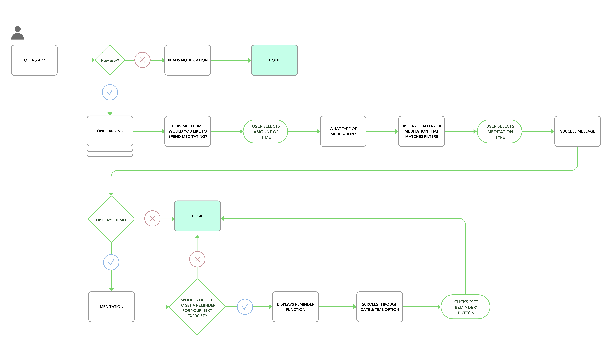
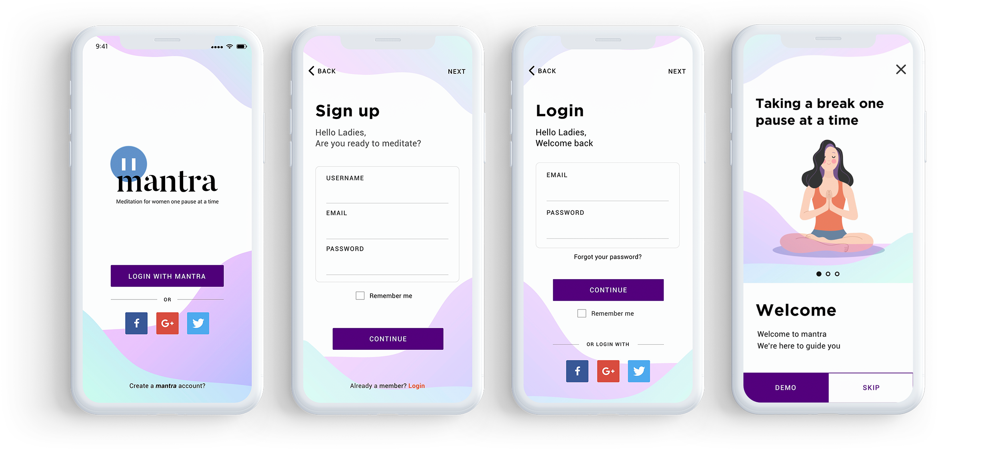
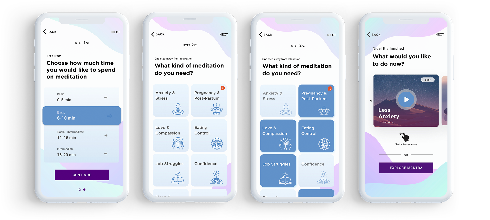
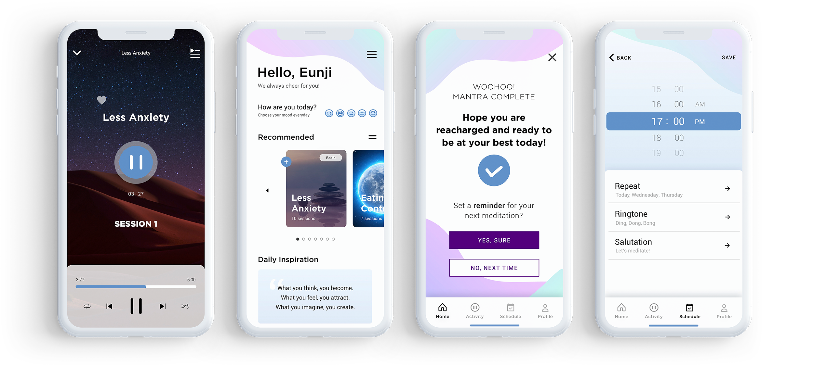

a word or sound repeated to aid concentration in meditation.
Our self-care app is designed to provide females with a tool to create a mediation routine to help with their overall well-being and female-specific issues. We have observed that our user’s pain points include: stressful commute, busy schedules, and needing more time for themselves & their hobbies outside of work. We aim to design our app so that our customers are more successful by: allowing users to set reminders for mediation breaks, providing selection of mediations that cater to women’s needs- offered in various time increments, even if the users only has a few minutes.
2 Weeks
TOOLS
Sketch
Invision
Adobe Photoshop
Adobe Illustrator
Ladies in America and Western Europe are stressed – nearly twice as much as men, according to a study led by the University of Cambridge.
Women are experiencing increased stress in today’s society. Maintaining a career with long hours, time spent in traffic, and making time to socialize are just a few factors that make it even more difficult to make time for self-care.
Mantra is designed to provide the busy female with a tool to create a mediation routine to help with her overall well-being and other female-specific issues. Mantra will allow users to set reminders for mediation breaks and provide positive reinforcement to establish a personal practice.
According to this survey result, I realized people, especially females, are really interested in their healthcare
35.7% of female users have chosen exercise and health as the most important part in their daily lifestyle. 14.3% of the users have chosen mental health as the most important.
78.6% of users spend their time on interests or hobbies for about 4 to 7hours and most users would use the reminder function. Therefore I added the reminder function on the Mantra app.
User persona and story board was used to deeply understand the user. Using the user’s persona as the thesis of a story. With the story we would further understand the user as if it was us and easier to solve the problems that the user was facing by adding specific features on the app.
 

From my user research, I created user flows from “sign up” to “play meditation” which is more user friendly and also set a reminder to make it easier to access features.
These are the initial wireframes. Edited and removed unnecessary items after user-testing 6 different people based on comfortability and usability.
 First paper prototype
First paper prototype
Changes after testing
Iterate, iterate, iterate
The main change in the design was the black share button as it was too noticeable and did not fit in with the rest of the theme.
Therefore, I changed the color to dark purple, which was less noticeable and can be branded as a women’s app. Using A/B testing and feedbacks to reflect what users wanted more, I unified all the color as primary and secondary. I made the primary color more noticeable with full vibrant color buttons and secondary color a little less visible by make it a line style button.
Roboto Regular
Far far away, behind the word mountains, far from the countries Vokalia and Consonantia, there live the blind texts. Separated they live in Bookmarksgrove right at the coast of the Semantics, a large language ocean.
Designed the logo while creating a brand. Wanted to design a logo based on a slogan influenced by our concept. First, in order to brainstorm ideas, I was sketching and creating mindmaps, then drew several logo concepts on my notepad from countless illustrated ideas. Then the idea of a comma icon was added to the Mantra’s logo because a comma would indicate a pause or a break between sentences which can translate into a short break in life. In order to create a comma, there were countless of pre-designs. After testing and feedbacks, people were stating that the logo was hard to interpret just by itself. Since a comma would look like a big comment sign. So to better translate the icon to have it portray is easier, I combined a comma with a pause sign. People can now understand what the icon defines and finalized it by adding the icon to the Mantra Logo which then synergizes with the slogan.
The completed screens below show effects of several feedbacks and adjustments that were made.
  What I learned
The timeframe for this project was only 2 weeks which is very time-limited but overall, I learned how to design efficiently for the user within a specific amount of time. I was able to obtain a satisfactory result after countless tests and failures by utilizing survey, research, persona, user flow, etc.. In the end I was able to realize how important UX process was and more you add can be beneficial to the user.